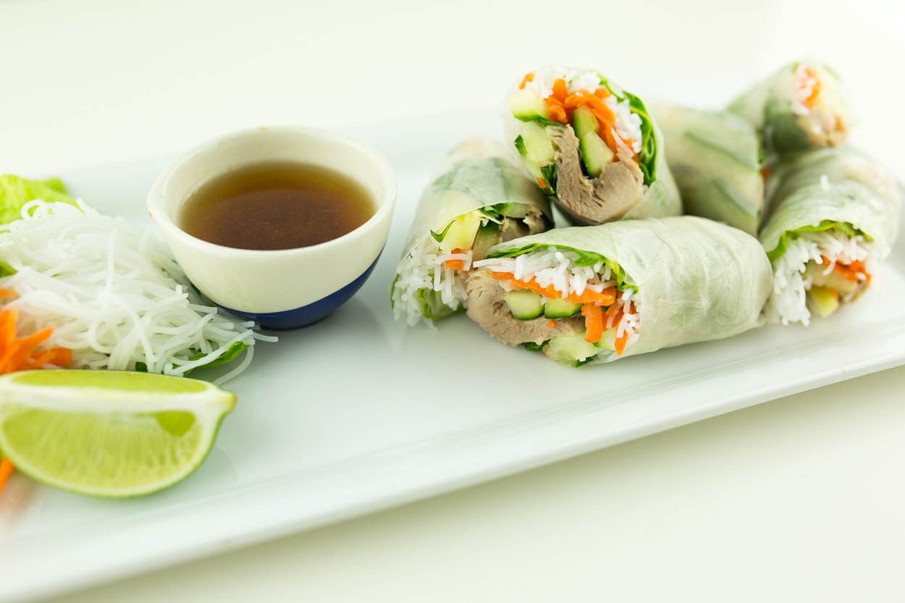

10 Minute Spring Rolls
10 Minute Spring Rolls Recipe

Description
These Spring Rolls take less than 10 minutes and are the true weeknight snack to make! The speedy
version involves just a quick dipping fish sauce, and the wraps. The fish sauce recipe is easily
remembered with proportions. 1 fish sauce to 1 sugar to 4 water. It could be 1, 1, and 4 spoons, or
1,1,4 cups. Scale up or down as needed and add water to taste/adjust for dipping saltiness.
Ingredients
- 1 Bottle of Fish Sauce
- Sugar
- Water
- 1 8-12oz Package of Vermicelli Noodles
- 1 Rotisserie Chicken
- 1 Any Size Package of Lettuce/Leaf Mix
- 3 Cloves of Garlic
- Dried Rice paper
Steps
- Measure 1 cup of sugar and pour into a bowl or jar. Then pour 1 cup fish sauce in, then 4 cups of warm water.
Adjust the water levels to taste. Add in 3 cloves of crushed or minced garlic. Mix well. Sauce is complete.
- Boil 1 pot of water. Follow the manufacturer's instructions to cook the Vermicelli noodles. Usually it's
just boil the noodles until softened, similar to wheat pasta. Drain and let it cool down on the table.
- Take 1 dried Rice paper wrap and dip it into water, then place it onto a plate. Wait 15 seconds for it to soften
and then shred some chicken off the Rotisserie Chicken. Place it towards one edge of the spring roll wrap. Add
your lettuce on top.
- Take the side of the wrap closest to the mound of food, and pull up, wrapping once around the food. Then roll
and continue the wrap towards the other edge until you have a burrito like structure.
- Dip into fish sauce and enjoy! Garnish and add whatever toppings you please.